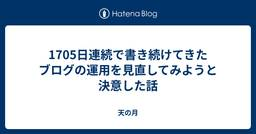
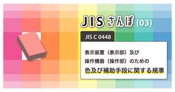
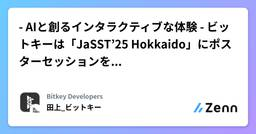
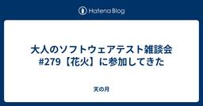
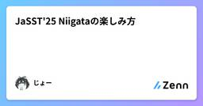
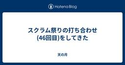
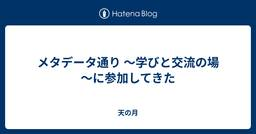

直近1週間の更新
7/25 (金)
ポールトゥウィン代表取締役 CEO 橘鉄平が審査員として参加 次世代クリエイターを応援する「IND-1 2025 セミファイナル」レポート  PTW／ポールトゥウィン【公式】
PTW／ポールトゥウィン【公式】
大阪・関西万博会場にて開催された「IND-1 2025 セミファイナル」続きをみる
1日前
7/24 (木)
「うまくいかない」が宝物になるとき 〜デザイン思考のテストって？〜  Zennの「Test」のフィード
Zennの「Test」のフィード
この記事が役立つ人様々な思考法について学んで実践したい人駆け出しのエンジニアデザイン思考って、なんとなくアイデアを出すとか、共感するとか、そんなイメージがあるかもしれないけど──じつは最後のステップ「テスト」が、いちばん宝物が眠ってる場所だったりするんだ。 テストって、どんなことするの？ここで言う「テスト」は、学校のテストみたいに正解を出すことじゃなくて、「作ったものを実際の人に見てもらって、どう感じるか、どこが使いにくいかを聞いてみる」 ってこと。フローチャートたとえばこんな感じ。作ったプロトタイプを友だちに試してもらう5分で答えてもらえる簡単なアンケ...
2日前
AIは自動テストのペインを解消するのか？ (AI Test Lab vol.3)  SHIFT EVOLVE グループの新着イベント
SHIFT EVOLVE グループの新着イベント
開催日時: 2025/09/30 19:30 ～ 20:50<br />開催場所: オンライン<br /><br /><h2>AIは自動テストのペインを解消するのか？ (AI Test Lab vol.3）</h2><p>「人が作った要件に対して人が開発し、テストをする」</p><p>従来は当たり前だと思っていたことが、生成AIの登場と活用の広がりとともに大きく変わりつつあります。<br>生成AIにどこまで置き換えられるようになるのか、要件定義や開発の目線では多く語られるテーマですが、本シリーズではテストにフォーカスしてディスカッションを重ねます。<br></p><p>今回は、テストツール業界のトップランナーであるオーティファイ株式会社 品質エバンジェリストの末村 拓也氏と、Postman株式会社 テクノロジー・エバンジェリストの川崎 庸市氏をゲストにお招きし、株式会社SHIFT テスト自動化アーキテクトの石井 一成が「AIは自動テストのペイン...
2日前
【メディア掲載】日本経済新聞 電子版特集：なぜ、ポールトゥウィンは“QA（品質保証）”事業を成長エンジンと位置付けるのか？ PTW／ポールトゥウィン【公式】
現在、DXの推進や生成AIの普及により、ソフトウェアの開発量が急速に拡大しています。それに伴い、ソフトウェアの品質や安全性を確保するためのQA（品質保証）の重要性もあらゆる業界で高まっています。日本経済新聞 電子版特集では、拡大を続けるＢＰＯ領域におけるＱＡ事業のキープレイヤーとしてポールトゥウィンホールディングスを紹介しました。インタビューに応えた代表取締役社長の橘鉄平は、ポールトゥウィンの独自の立ち位置と強みについて、記事の中で次のように語っています。ゲームデバッグからスタートした企業として、QAサービスへ領域を広げるのは自然な流れです。ただし、ゲームと業務アプリケーションは異なります。ゲームデバッグではユーザー目線の検証が重視されますが、QAでは開発視点の品質管理がより強く求められます。その違いを大きな壁だとは感じていません。むしろ教育やフードサービス関連などのユーザー視点が重視される領域では、当社の知見が強みとして生きるはずです掲載記事より抜粋続きをみる
2日前

Shadow Testingで実現する安心な機能リプレイス 2 Zennの「Test」のフィード
2 Zennの「Test」のフィード
!この記事は毎週必ず記事がでるテックブログ Loglass Tech Blog Sprint の101週目の記事です！2年間連続達成まで残り5週となりました！ログラスの龍島（@hryushm）です。最近は家でミニトマトを育てていましたが、この暑さで枯れてきてしまったのが悲しいです。本記事では、参照系機能の大規模リプレイスを行った際に、Shadow Testingを導入して得られた知見を共有します。上手く活用できれば非常に強力なテスト手法だと感じたので参考になれば幸いです。 Shadow TestingとはShadow Testingは、本番環境のトラフィックを新旧両方のシ...
2日前
7/23 (水)

1705日連続で書き続けてきたブログの運用を見直してみようと決意した話  天の月
天の月
タイトルのとおりなのですが、このブログの運用を見直そうと思いました。どんな形で・・というのはまだしっかりと固まっているわけではないのですが、そう思ったきっかけや最近感じているもやもやをつらつらと書いてみようと思います。 継続と惰性 学び方の転換 今後どう運用するか？ 継続と惰性 度々話していることなので詳細は割愛しますが、もともとこのブログを始めたのはチームオキザリスの存在に影響を受けたというのが一番の理由でした。スクラムやアジャイルを学びたいと思ってコミュニティに入ったはいいけれど右も左もわからない中で、どうやって高速に知識をキャッチアップしていけばいいのか？どうしたらもっと仕事がうまくなれ…
3日前
品質改善は“手段”──その先にある課題解決を見据える  ソフトウェアテストタグが付けられた新着記事 - Qiita
ソフトウェアテストタグが付けられた新着記事 - Qiita
バグを減らす意味を、もうちょっと解像度高く捉えてみる「バグを減らすことは良いことだ」と多くの人が思ってると思う。でも、いざ「なぜ良いのか？」を具体的に言語化しようとすると、意外と詰まってしまう。•何が？•誰にとって？•どう良いのか？このあたりが曖昧なまま...
3日前

JISさんぽ(03) JIS C 0448「表示装置（表示部）及び操作機器（操作部）のための色及び補助手段に関する規準」  品質 | Sqripts
品質 | Sqripts
こんにちは、QAコンサルタントのツマミです。 皆さま、JIS※1スキーのツマミが今回目を付けましたのは“色”についてのJISです。我々AGESTの本社前には江戸二大庭園のひとつ、水戸のご老公とも所縁の深い「小石川後楽園」...The post JISさんぽ(03) JIS C 0448「表示装置（表示部）及び操作機器（操作部）のための色及び補助手段に関する規準」 first appeared on Sqripts.
3日前

- AIと創るインタラクティブな体験 - ビットキーは「JaSST’25 Hokkaido」にポスターセッションを出展します！ Zennの「QA」のフィード
はじめにこんにちは。株式会社ビットキー Software QAチームからお知らせです。この度ビットキーは、7/25(金)に開催の「JaSST’25 Hokkaido」にポスターセッションを出展いたします✨前回実施したJaSST’25 Kansaiのポスター企画を、AIの力を使ってさらに進化させました！皆様と一緒に創り上げる新しいブース体験にご期待ください👏🏻この記事では、皆様に楽しんでいただくための企画内容を一足先にご紹介できればと思います！ JaSSTとはJaSST（ジャスト）は、NPO法人ASTER （ソフトウェアテスト技術振興協会）が運営するソフトウェア業界...
4日前
「ベストを尽くした」と自分で思えることは、どんな称賛よりも強い くぼぴー
こんにちは、kubopです。最近、仕事について改めて考える時間がありました。私はわりと熱量が高いタイプで、「全員で甲子園行くぞ〜！」みたいなノリで、仲間やチームと一緒に走るのが好きです。だけどふと立ち止まったとき、自分は、いったい何にモチベートされているんだろう？と振り返りました。続きをみる
4日前
7/22 (火)

大人のソフトウェアテスト雑談会 #279【花火】に参加してきた 天の月
ost-zatu.connpass.com 今週もテストの街葛飾に行ってきたので、会の様子と感想を書いていこうと思います。 プロポーザル CQO スクラムフェス大阪 きょんさんのリサーチ業務 全体を通した感想 プロポーザル 会社があまりにも固まりすぎることはないようにしているという話や、逆にあんまり会社のことを考えて取ったりはしないようにしているという各地域のスクラムフェス事情の話がありました。 とはいえシンプルに面白ければ通るというのは各地域共通であったり、なにもやっていないのか？と言われればもちろんやってはいるんだけれども、あんまりプロポーザルという形に出せるような形で学びを言語化すること…
4日前
【Laravel】自動テスト実行のためのPHPUnit環境構築 Zennの「Test」のフィード
はじめにLaravelでWebアプリケーションを開発し、デプロイが目前に迫ると「本当にすべて正常に動作するのか」と不安になる瞬間が訪れます。本番デプロイ前は、ローカルと挙動が異なることもあるため、事前の検証は不可欠ですが、自動テストを実施する前には様々な準備が必要です。本記事では、自動テスト実行のためのPHPUnit環境構築準備に必要な項目を紹介します。 対象者Laravelアプリを初めて本番公開するエンジニアアプリの手動テストに不安がある方デプロイのたびに同じ手動テストの繰り返しから解放されたい方 テスト環境の準備手順自動テストの目的は、本番環境にデプロイする...
4日前

JaSST'25 Niigataの楽しみ方 Zennの「QA」のフィード
暑くてじめじめするのつらすぎ...どうも、じょーです。JaSST Niigataの運営に携わって3年目になるのですが、今年は共同実行委員長を務めさせていただくことになりましたので、委員長らしい仕事をしてみようかなと。JaSSTのこと知らないよって方には少し触れていただき、知ってるよって方には今年のJaSST Niigataに興味を持ってもらえるような内容にできたらと思っています。!※全てのコンテンツが確定しているわけではないので、投稿した内容に変更が生じる可能性があります。あらかじめご了承ください。この記事も適宜更新していきます。*2025/07/22 新規作成 Ja...
4日前
USB-CANでmibotのソフトウェアテストを自作してみた Zennの「Test」のフィード
はじめにこんにちは！KGモーターズ株式会社でエンジニアをしている中村です。KGモーターズは、今日より明日が良くなる未来を創る をビジョンに掲げ、広島を拠点に1人乗り小型 EV mibot を開発しているスタートアップです。車のソフトウェア開発のテストについて、最終的には車に載せて確認することは必須ですが、開発段階で毎回車に載せて...テスト...を繰り返していたらあまりにも時間がかかってしまうため、少しずつスケールしたテストをしていくことが一般的です。その中でも今回は車載コンピューター/アプリケーション周りのテストについてです。開発途中のmibotのディスプレイアプリを少し...
4日前
QA視点から企画さんに貢献するためのデータの話 ソフトウェアテストタグが付けられた新着記事 - Qiita
プロダクト開発の現場では、日々いろんな意思決定が行われています。その中で「どんなデータを見て判断するか？」っていうのはめちゃくちゃ重要です。でも、その“見ているデータ”って、実は立場によって結構違っていたりします。今回は「QAの立場から、PJにどう貢献できるか？」をテ...
4日前
『テストの7つの原則』 〜 パート⑥ 〜
Zennの「Test」のフィード
はじめに現在、アプリ開発者としてプロダクトの持続的な成長やユーザーへのコミットに寄与するためにも、SDLC全体を見渡して開発をすること、および、それにはテストに関する体系的な知識が必要だと考え、それを効率良く学べるJSTQB Foundation Levelの資格試験の勉強をしていました。この記事ではそこでの学びをアウトプットしたと思います。今回はその中でも「テストの7つの原則」の一部について記事にしたいと思います。なお今回は テストはコンテキスト次第こちらの原則について記事にしてみようと思います。 テストはコンテキスト次第とはこれはテストには...
4日前
『テストの7つの原則』 〜 パート⑥ 〜 ソフトウェアテストタグが付けられた新着記事 - Qiita
はじめに現在、アプリ開発者としてプロダクトの持続的な成長やユーザーへのコミットに寄与するためにも、SDLC全体を見渡して開発をすること、および、それにはテストに関する体系的な知識が必要だと考え、それを効率良く学べるJSTQB Foundation Levelの資...
5日前
カオスに立ち向かえ！抽象度の高い仕事に対処するアジャイルプロセス くぼぴー
こんにちは。kubopです。突然ですが、あなたが抽象度の高い仕事をするとき、どんな順序で物事を進めていますか？私は最近、自分の思考パターンを俯瞰して見てみました。すると、入り口は違えど、だいたい同じ構造を辿っていることに気づいたんです。続きをみる
5日前
7/21 (月)

スクラム祭りの打ち合わせ(46回目)をしてきた 天の月
aki-m.hatenadiary.com こちらの打ち合わせをしてきたので、会の様子と感想を書いていこうと思います。 プロポーザルの少なさへの対応 チケット売り出し Keynote Speakerの情報公開 スクラム祭りのホームページのロゴ修正 プロポーザルの少なさへの対応 現状だと地域トラックが多数立候補いただけているのに対してプロポーザルがやや少なめで、XP祭りにも一定はプロポーザルが残るようにしなくてはいけないということを考えると、現状だとやや少ないかもという話がありました。 対策としてなにか今からすぐにできるのか？というのは難しいかもしれないんだけれど、コミュニティや会社の仲間に対し…
5日前

動画をインプットに不具合再現手順を生成AIに書いてもらおう
Zennの「QA」のフィード
こんにちは、SODAでクオリティエンジニアをしているokauchiです。今回は不具合再現手順を生成AIの力を借りて楽に書こうというテーマです。自分が目に届く範囲のチームであればまだ再現手順の確認、レビューをすることが出来ますが、組織全体となった場合、確認が困難になっていきます。その中ではガイドラインを作成することが求められるのですが、ガイドラインを整備しても、解釈違いやどうしても他の業務より劣後されて、メモレベルの記述になってしまうこともありえます。それを防ぐためのアプローチとして有効そうです！ 不具合報告の「ばらつき」が生まれる理由プロダクトの品質保証を担っていると、開発・サ...
5日前
テスト設計にも使える設計原則：SoCの原則とSLAP 22 千里霧中
千里霧中
SoCの原則とSLAP ソフトウェア設計の原則にSoCの原則とSLAP（単一抽象度レベルの原則）があります。これら原則は、アーキテクチャやコードの責務設計・構造設計の基本となります。以下それぞれ解説します。 SoCの原則 SoCは「Separation of Concerns（関心の分離）」の略称です。SoCの原則は、対象を関心ごと（何をしたいのか、何をすべきか）を基準に分離すべき、という原則になります。これは次の目的で実施します。 規模が大きく複雑で扱いにくいものを、扱えるサイズになるまで関心ごとを単位に細分化します。 責務やコンポーネントを、関心ごとを基準に設計することで、責務やコンポーネ…
5日前
7/20 (日)

メタデータ通り ～学びと交流の場～に参加してきた 天の月
datayokocho.connpass.com こちらのイベントに参加してきたので、会の様子と感想を書いていこうと思います。 会の概要 会の様子 企業データ価値評価の理論と実践 データ活用の現状と課題 会全体を通した感想 会の概要 メタデータに関わる人たちが交流する場で、今回はメタデータ活用の最新動向に関する話題が提供される場になりました。 会の様子 企業データ価値評価の理論と実践 最初に眞田さんから話がありました。 データ資産評価をする際には、企業評価手法や無形資産評価、データベース評価などが方法論として出ていて、中国のチャイナユニコムがデータ資産会計基準を施工したり、メタデータ整備ROI…
6日前